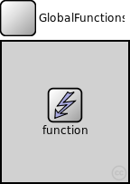
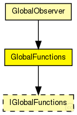
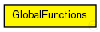

This documentation is released under the Creative Commons license
This documentation is released under the Creative Commons license(no description)
The following diagram shows usage relationships between types. Unresolved types are missing from the diagram. Click here to see the full picture.
The following diagram shows inheritance relationships for this type. Unresolved types are missing from the diagram. Click here to see the full picture.
If a module type shows up more than once, that means it has been defined in more than one NED file.
| GlobalObserver (compound module) |
global module that contains the globalNodeList and the globalStatistics module |
| Name | Type | Default value | Description |
|---|---|---|---|
| functionType | string |
type of globalFunctions |
module GlobalFunctions { parameters: string functionType; // type of globalFunctions submodules: function: <functionType> like IGlobalFunctions { parameters: @display("i=block/control"); } }
This documentation is released under the Creative Commons license